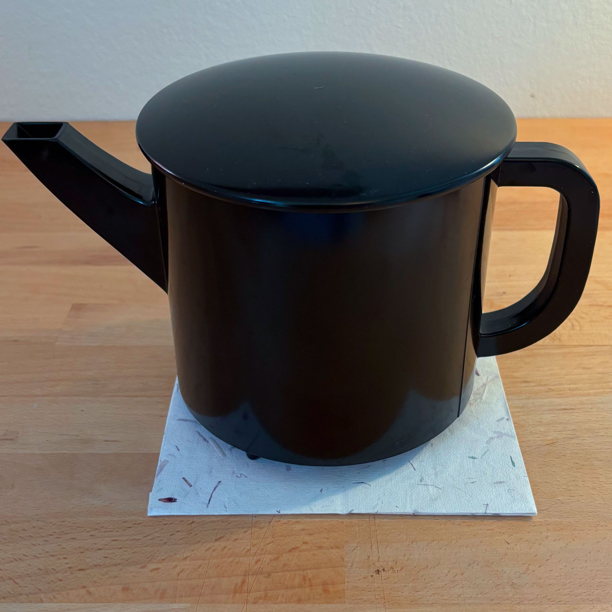
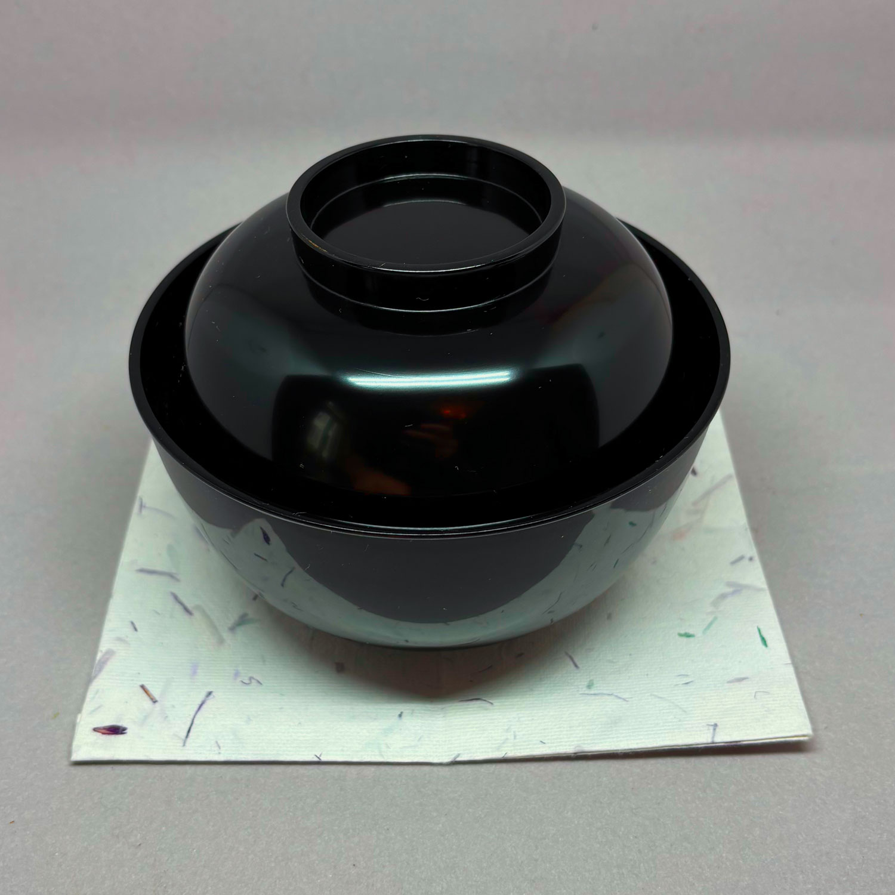
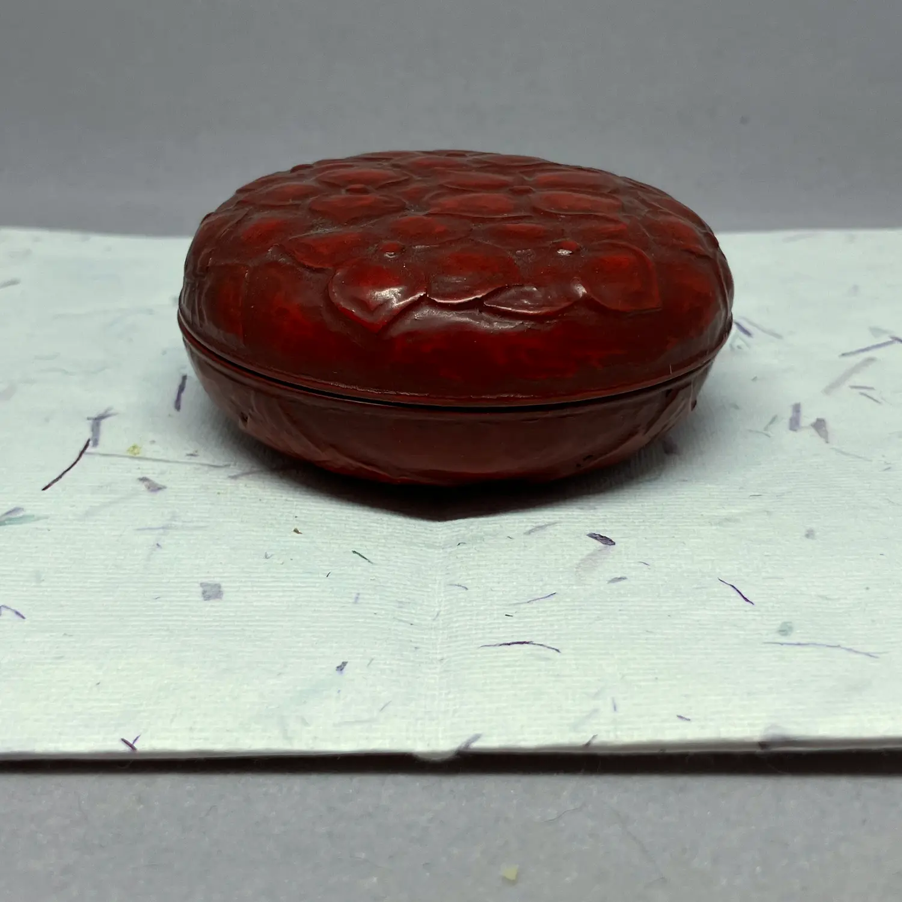
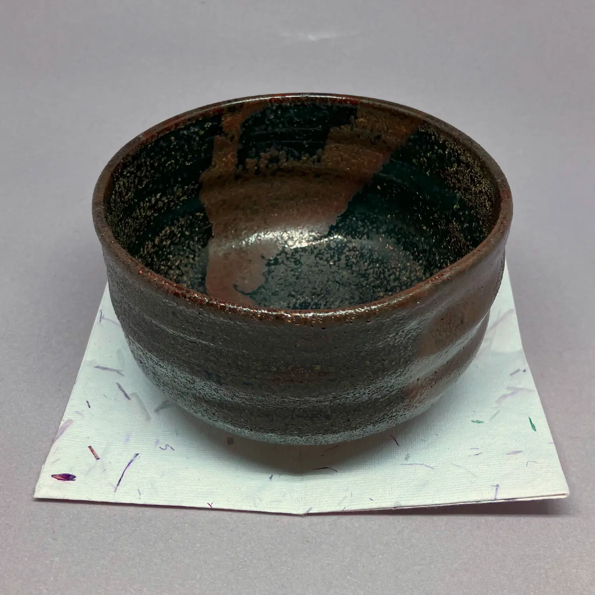
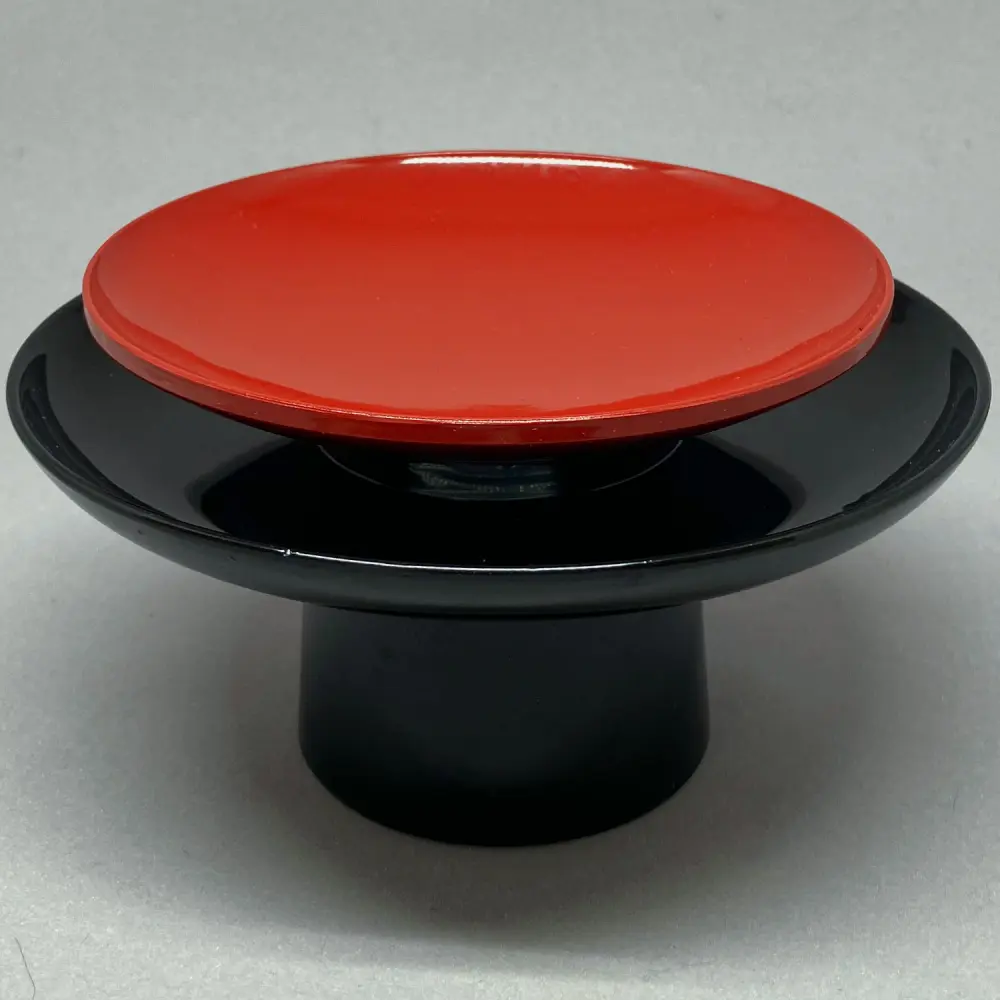
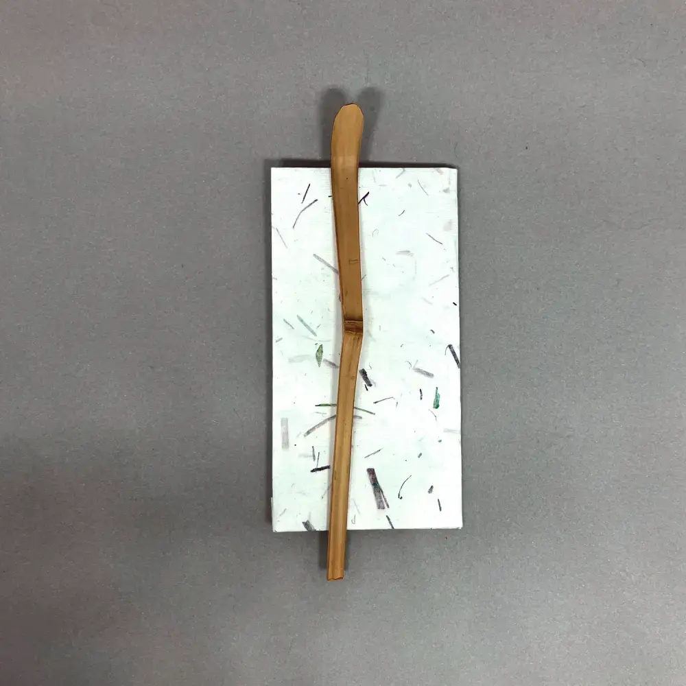

Most of the tea utensils I have I bought second hand on temple flea markets during my travels to Japan. I'm fond of every item that I bought, but also, unfortunately, I have limited room for tea in my flat. Because of that, I'm listing here some items that I don't want to throw away, but that also I cannot keep. Each item has a price not because this is a commercial endeavour, but because I know from experience that things given for free usually also feel to the recipient like they are worthless. With this idea in mind I gave each item a symbolic price.





